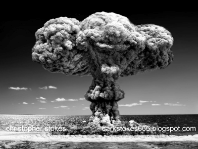
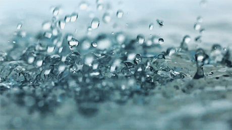

NPU of Science and Technology by MIS
NPU of Science and Technology by MIS
Roadster
相較生質能、火力、水力與核能發電對於環境生態所造成不可磨滅的傷害，反觀太陽能與風能是可以藉由科技研發新技術處理太陽能板與風機的廢棄物。

太陽能
優點（Strength）：
1. 在熱溫帶地區這種長年日照充足的國家，利用天
然資源來永續發電無疑是逐利而行。
2. 可分為屋頂、地面及水面型，即陸海空皆可架設
太陽能板。
3. 使用天然資源發電減少排碳量，也不會造成空氣
汙染。
缺點（Weakness）：
1. 架設太陽能板所占空間，會影響陸上農作物生長
、水中生物作息、海鳥棲息問題產生。
2. 順應宇宙法則太陽會公自轉，而無法提供24小時
發電。
3. 回收太陽能板工序複雜且處理成本昂貴，導致非
法廢棄太陽能板問題產生。
生質能
優點（Strength）：
1. 利用有機廢棄物提煉的沼氣及合成氣作為氣態燃
料來發電。
2. 利用微生物與油籽作物提煉成的生質酒精與生質
柴油作為生質燃料驅動電動車。
3. 利用廢橡膠、汙泥、廢木材、廢纖維、一般垃圾
作為固態燃料來燃燒發電。
4. 以上轉換為生質能的行為可幫助減碳，而使用生
質能又會造成增碳，形成碳中和現象。
缺點（Weakness）：
1. 原物料轉置為生質燃料成本過高、體積過大儲存
空間有限與氣體燃料需時間醞釀。
2. 因為生質能所使用的原物料大多為動物與植物，
而為了生產生物燃料養殖動物與開墾土地，導致環
境衝擊、糧食安全與土地劣化問題產生。

核能
優點（Strength）：
1. 核能發電跟火力發電一樣是提煉燃料來發電，不
過是使用含有輻射物質的鈾礦，核電廠原理是運用
太陽處在高溫與高壓的環境下反應產生熱能。
2. 在發電過程中使用鈾礦作為燃料不會排放二氧化
碳。
3. 一般鈾燃料棒壽命約18個月，期間以24小時穩定
運作。
缺點（Weakness）：
1. 鈾礦作為核燃料並不是取之不竭的，因此核能發
電雖為綠色能源但並不屬於再生能源。
2. 核廢料雖不會產生溫室氣體，但原燃料本就帶有
輻射物質，導致人體內多項疾病所引發。
3. 核電廠人員一旦發生不當操作，會導致核災爆發
，引發事件如切爾諾貝利、福島、三哩島事件，造
成多數人傷亡。

風力
優點（Strength）：
1. 風力發電是靠空氣流動轉動風機葉片產生電能。
2. 台灣做為一個四面環海的海島國家，不只可以靠
著季風帶來的優渥風源，世界上風力最強的20處離
岸風場，因為台灣海峽使台灣佔16處之多。
3. 風機建置成本低廉、壽命長達20-25年。
缺點（Weakness）：
1. 陸域風機建置會造成陸地空間不足、候鳥撞擊墜
落與噪音問題產生；離岸風機會破壞海洋環境與影
響養殖漁業。
2. 風機葉片以玻璃纖維、碳纖維等合成材質所製成
，導致回收處理困難廢棄問題產生，建置風機原物
料會產生碳排放。
3. 風力發電穩定性不佳，無法24小時提供電能。

火力
優點（Strength）：
1. 在台灣1984年爆發多起礦場災變後，因為不再自
產煤礦演變至今仰賴進口他國煤礦，而煤礦成本低
廉又易取得，因此為火力發電燃氣占比第二位。
2. 天然氣相較其他化石燃料產生熱能較高，排放二
氧化碳量最少且造成空氣汙染較輕微，因此為火力
發電燃氣主力。
3. 因為火力發電發展歷史長，建廠容易，所以裝置
量為發電能源之首、可以持續24小時大量發電、化
石燃料易儲存運送且蘊藏量豐富。
缺點（Weakness）：
1. 開採煤礦礦坑坍塌及天然氣運送過程洩氣風險性
大。
2. 因為化石燃料所產生的粉塵、二氧化碳、氮氧化
物、硫氧化物、懸浮微粒、重金屬及廢汙水等，造
成空氣汙染影響人們健康及環境生態破壞、地下水
酸化形成酸雨、排放過多溫室氣體加劇全球暖化。
3. 過度仰賴他國化石燃料進口，如遭到各種通貨膨
脹因素影響物價，可能會導致全台大停電問題產生。

水力
優點（Strength）：
1. 水力發電是利用地形高低落差大，水順勢下流造
成的動力，而台灣做為一個地形多樣的國家，其最
高山-玉山與最低山-宏國海拔相差約3950m。
2. 台灣作為全球2022年降雨量排名前50名的國家，
可知由降水量高為水力發電帶來的優勢就會越強。
3. 水力發電是靠上游水庫儲水量，並利用水壩及壓
力管改變流向至下游發電廠來產生電能，而發電廠
不只可以引水灌溉農田，還可以利用壓力管將多餘
的水引至上游重新發電。
缺點（Weakness）：
1. 全球暖化的嚴重程度已經是眾所皆知的事，近年
台灣氣候明顯不正常，梅雨季降雨量越來越少，颱
風幾乎不登陸，比較2019年均雨量2197.2 毫米與20
20年均雨量1742.4毫米，可見相差甚遠。
2. 水庫會導致底下植被因淹水缺少氧氣而造成甲烷
排放，尤其台灣是熱帶與副熱帶國家排放量是其他
氣候帶的5倍。
3. 建置水壩與水庫會破壞環境生態，一旦暴雨襲擊
造成土石流或堤壩發生坍塌洪水氾濫，將會逝去多
數人命。